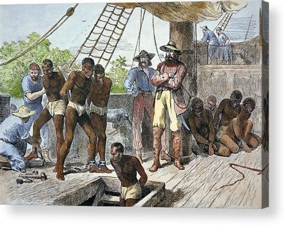
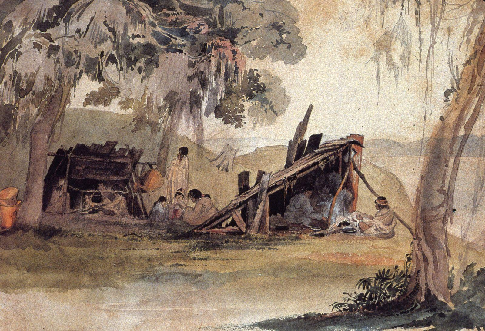
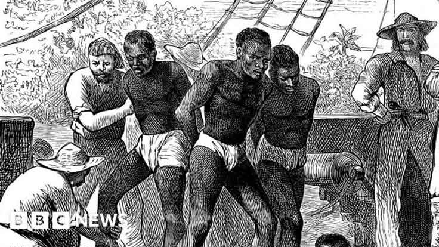
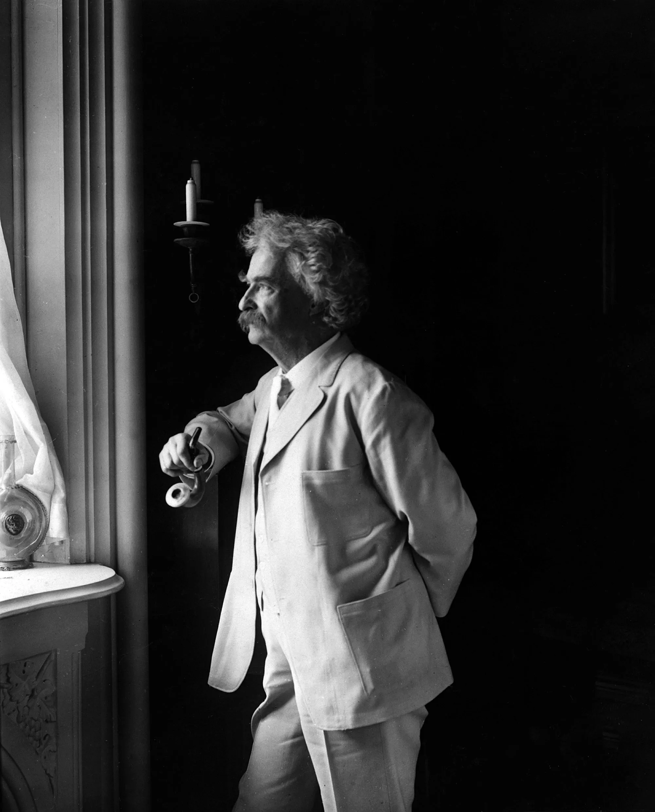
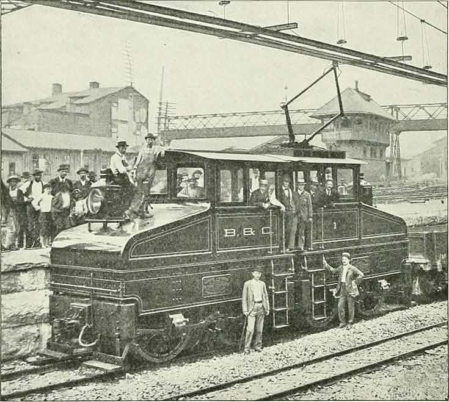

Learn about the institution of slavery during the period in which Huck and Jim's story takes place and how it influenced American society.

Discover the importance of the Mississippi River as a major transportation route and the setting for Huck and Jim's journey.

Explore the laws that restricted the rights of enslaved individuals and shaped life in the American South.

Learn about Samuel Langhorne Clemens, known as Mark Twain, and how his life experiences inspired his literary works.

Examine important events and social conditions that influenced the story and its themes of freedom, justice, and humanity.